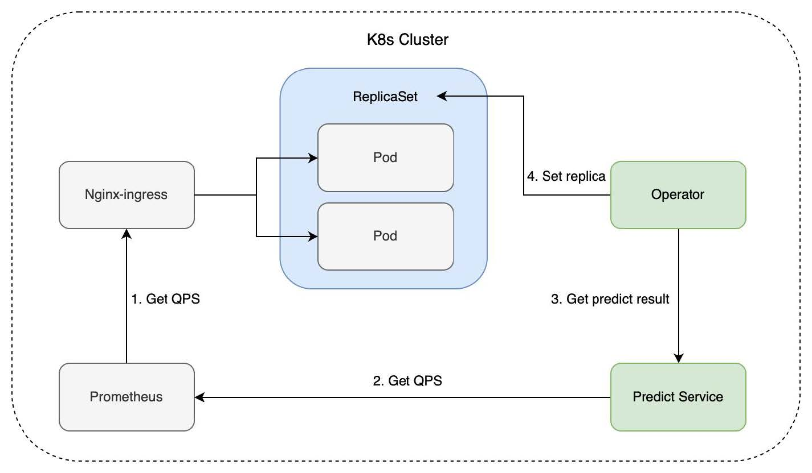

AIOps 模型训练和自动扩容
概述
架构设计

Operator
从预测服务中获取推荐的副本数 通过修改 deployment.Spec.Replicas 字段达到控制业务 Pod 副本数的目的 每隔一段时间（30s）再次从预测服务中获取推荐副本数
其他与副本数存在关系的特征
| 特征 | 特征关系 | 备注 | 算法 |
|---|---|---|---|
| 时间 | 季节性 | 明显的波峰波谷 | 季节性算法（statsmodels、Prophet） |
| QPS | 线性 | QPS越高，副本数越多 | 线性回归 |
| 响应时间（延迟 | 非线性关系 | 支持向量回归（SVR） | |
| 内存使用率 | 非线性 | 随机森林、MLP | |
| CPU使用率 | 非线性 | 决策树、随机森林 |
训练数据（模拟一天）
使用的核心库：Pandas
Pandas 主要功能包括数据清洗、数据转换、数据聚合、处理缺失值、数据筛选等 常见操作： read_csv(): 从 CSV 文件读取数据。 dropna(): 删除缺失值。 groupby(): 数据分组操作。 merge(): 合并数据集。
使用的核心库：Sklearn
Sklearn 是一个用于机器学习的库，提供了大量的算法和工具，用于数据预处理、模型训练、模型评估和模型选择 常见功能： 数据预处理：StandardScaler（标准化数据）、LabelEncoder（标签编码） 模型训练：如 LinearRegression（线性回归）、RandomForestClassifier（随机森林分类器） 模型评估：cross_val_score()（交叉验证）、accuracy_score()（准确率评估）
数据处理的基本步骤
数据载入
df = pd.read_csv("data.csv)
常见操作
读取 QPS 列：qps_column = df['QPS']
读取第二行：second_row = df.iloc[1]
读取第二行，QPS 列的数据：second_row_qps = df.loc[1, 'QPS']
筛选 QPS > 10 的行：filtered_rows = df[df['QPS'] > 10]
时间格式的转化
df["minutes"] = (
pd.to_datetime(df["timestamp"], format="%H:%M:%S").dt.Hour * 60 + pd.to_datetime(df["timestamp"], format="%H:%M:%S").dt.minute
)
将 timestamp 列转为时间格式，然后转换为“从午夜开始的分钟数” 例如，00:10:00 会被转换为 10 分钟
捕捉时间的周期性
df["sin_time"] = np.sin(2 * np.pi * df["minutes"] / 1440)
df["cos_time"] = np.cos(2 * np.pi * df["minutes"] / 1440)
使用正弦和余弦函数，将时间转换为周期性特征 1440 为一天的分钟数，通过周期函数让模型更好感知时间如何影响流量 输出：
为什么要转化为余弦、正弦函数？
将圆周等分成 4 个象限，分别对应 0 点、上午 6 点、中午 12 点、下午 6 点 圆代表周期性时间循环，对于任意的时间都可以放在圆的某个点表示 对于任何一个圆上的点，我们可以用 cos(t)、sin(t) 表示 X 和 Y 轴的坐标 该坐标值就是该时间点的特征编码
其他特征的考虑
为了提升准确性，可以给时间增加更多特征 星期几 节假日 月份